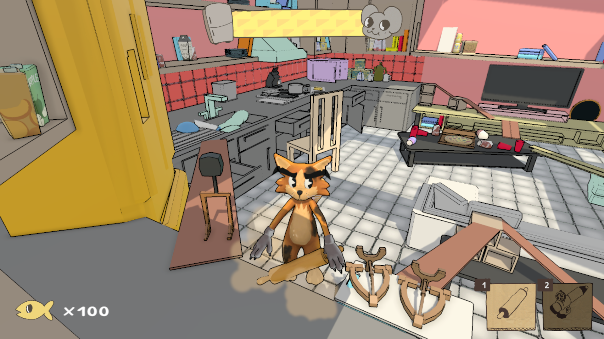
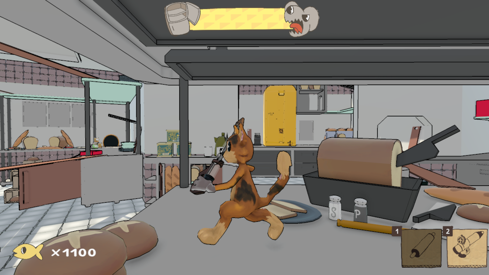

Fromage Fortress
This project was made as part of my final group project at University in which we were given the opportunity to make something
we had full creative control over to show at our Course Degree show "ComX". The game we came up with was 'FromageFortress', made
in the Unity game engine, a game with a unique blend between the tower-defence and wave-surival genres.The player is a cat that
has to stop hoards of mice from stealing cheese in their fridge. Within the build phase players are able to place down
towers to deal with mice. Then in the combat phase the mice starting attacking, testing the player's defences and skills.
After 2 months of development, we had the honour of being able to show off our prototype at Insomnia #72 in March 2024.

As designated project manager, I was responsible for making sure our team remained organised and achieved our goals on time using the agile methodology.
As a programmer, my main responsibilities were developing the following game systems:
1. The game manager that handled the build and combat phases with designer friendly wave management.
2. The mice AI implementation using designer friendly Behaviour Trees and Utility AI in C#.
3. The health system, using a generic health script that could be applied to anything we want to be damageable.
4. A modular status effect system so that every entity that can be damaged can also have a status effect applied to them.
5. The weapons system that uses a base weapon class, making it easy to expand the number of weapons without the player script caring about their implementation.
6. The Player input using Unity's New Input system and then broadcasting the input to other scripts using C# events.
In addition to those systems, I also helped the other programmer debug his code as well as my code when needed. I also helped other team members implementsmaller features that help add polish to the game, such as a results screen to give a player a score to show them how well they did. By keeping my systems modular, the other programmer as well as animator were able to seamlessly intergrate their work with mine. Helping smooth out development.
